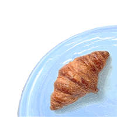

Det sorte ler vi bruger er fra Spanien, mens det hvide stenler er fra Tyskland.
Vores ler er kvalitetskontrolleret mht. fremstilling af fødevarekontaktmaterialer.
Jeg laver hverdagsting der er gode at have i hånden og smukke at se på. Jeg stræber efter ting, der har rod i keramisk tradition med rustikke former og abstrakte dekorationer.

- Leret skal tørre i 2-3 dage, det kommer alt sammen an på vejret.
- Om sommeren er luften mere fugtig og derfor tager det længere tid for leret at tørre.
- Om vinteren er luften mere tør og derfor tager det kortere tid for leret at tørre.

Jeg har altid været rigtig glad for farve.
Jeg prøver at finde nogle farver matcher i styrke så der altid er mulighed for at mixe mine forskellige produkter.
Jeg prøver at finde nogle farver matcher i styrke så der altid er mulighed for at mixe mine forskellige produkter.

Det er næsten synd at anrette mad på de flotte tallerkener. Men når du spiser af en lækkert designet tallerken, bliver oplevelsen bare dét bedre!